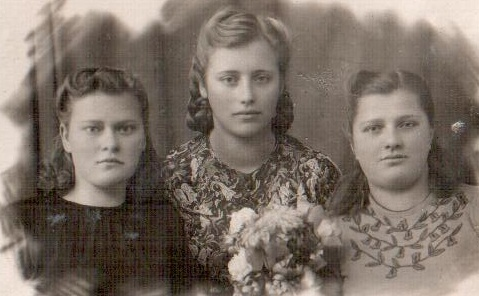
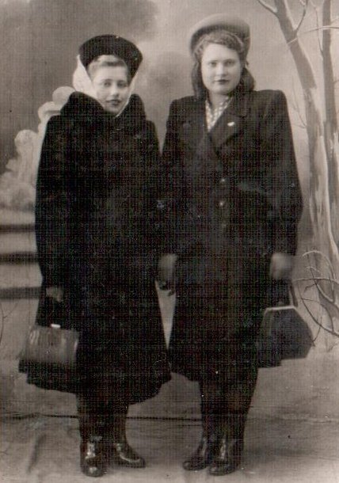

Борозна (Шевченко) Любовь Яковлевна
🏡 1. Семья и довоенное детство
Отец — Шевченко Яков Иванович, работал в колхозе; мама — Шевченко Мария Герасимовна, вела домашнее хозяйство. Семья была многодетной: старшая Дарья (учительница), Евфросиния (колхозница), братья Яков, Миша, Саша и Любовь.
⚡ 2. Начало войны и оккупация родного края
О начале войны узнали внезапно: у них гостил родственник майор Прохор Кондратенко, когда прилетел немецкий самолет и сбросил бомбу рядом с деревней. Майор поспешил в часть в Витебск. В 1941–1942 гг. в деревне была тишина, но в 1942 г. в Шатилках разместились оккупанты. Днем они грабили сараи, а ночью приходили партизаны.
⛓️ 3. Облава, арест и отправка в эшелонах
В 1943 г. при отступлении немцы начали жечь деревни. На праздник Троицы каратели пришли в Селище. Старшие сестры спрятались, а Любовь с матерью заставили жарить драники немцам. К вечеру жителей погнали под конвоем, постройки сожгли дотла. Семья ушла в чем стояла. Гнали через Чернейку, Красное, Речицу, погрузили в эшелон и привезли в Брест. Там людей отсортировали: трудоспособных отделили от матерей с малыми детьми. Через Ровно и дезинфекцию эшелон доставил их в Германию западнее Берлина. Пассажиры-немцы в электричках плакали, видя босых белорусских детей.
🌾 4. Рабский труд, испытания и лагеря Германии
В Хойере семью отобрал бауэр, но полицай перенаправил Любовь к другим хозяевам. С июня 1943 г. по май 1945 г. Любовь жила отдельно от родителей и братьев. В хозяйстве было 6 коров, свиньи, куры. Приходилось доить, вязать снопы, грузить, молотить. За малейший недодой хозяйка жестоко ругала. Спала в неотапливаемой комнатке с цементным полом. Рядом размещались 10 французских военнопленных. Любовь неоднократно пыталась сбежать к родителям, но полиция возвращала её назад.
🕊️ 5. Освобождение союзными и советскими войсками
Весной 1945 г. американские войска вошли в деревню и приказали прекратить работу. Предлагали уехать в США, но семья стремилась только на Родину. Американцы доставили семью к реке Эльбе, переправили на советскую сторону, откуда военные отправили их в Беларусь.
🌱 6. Возвращение на пепелище и мирный труд
По возвращении жили в землянке, строили деревянный дом, спасали чудом уцелевшую корову. Любовь окончила 5-й класс, затем училище по специальности «агроном», техникум и заочно Институт механизации сельского хозяйства. Работала экономистом. В 1955 г. вышла замуж за Борозну Владимира Ивановича, вырастили троих сыновей: Олега, Юрия и Сергея.
📷 Фотографии и архивные документы (2)
Фото 2. Борозна Л.Я., 1948 год, учеба в училище (в центре)

Фото 1. Борозна Л.Я., 1953 год, начало трудовой деятельности Давыд-Городок